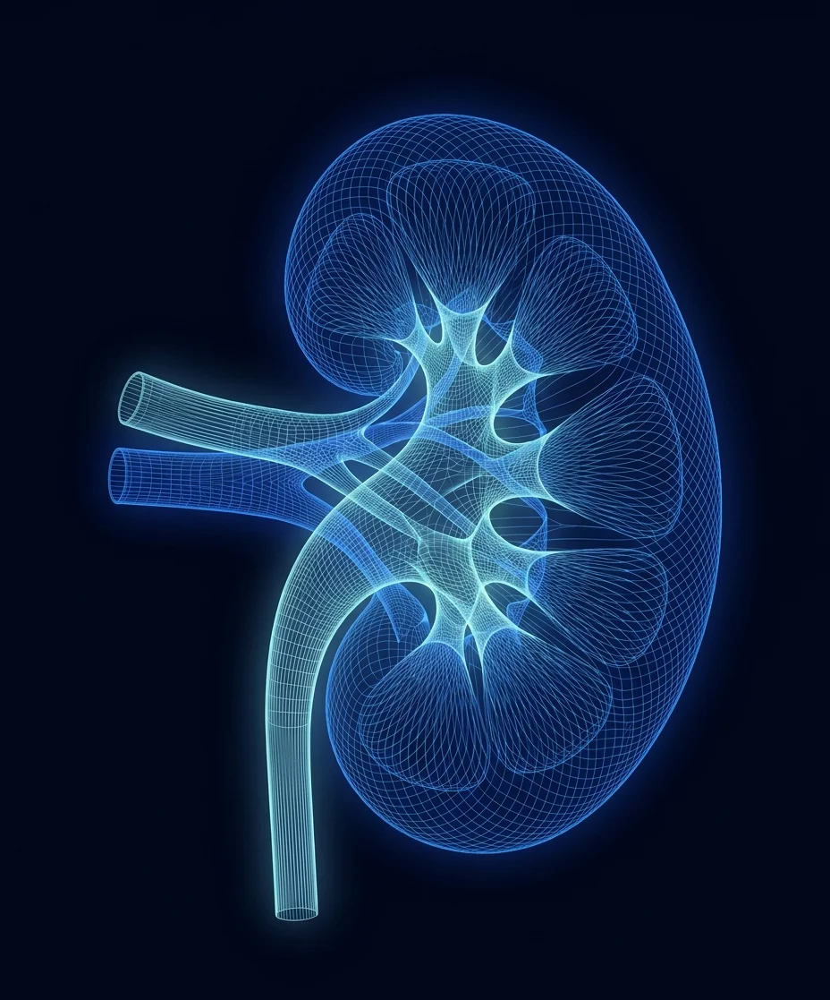

Precision care
Minimal downtime
Better outcomes
Board-certified urologist Dr. Hari Sawkar brings biomedical engineering expertise and advanced technology to men's and women's urologic health, from robotic surgery to office-based procedures that get you back to life faster.

Minimally invasive urology solutions
Dr. Sawkar pairs advanced technology with precision training from USC and Northwestern to get you better, with less pain and a faster recovery.


Patient guides, written by the surgeon
Plain-language reference pages that decode the numbers on your report and what each treatment really involves. No sign-up, no fluff.
Prostate size chart by age
Normal volume by decade, what size is dangerous, cc and grams explained, plus a volume calculator.
IPSS symptom score calculator
The seven-question score urologists use, scored instantly with what your number means.
Post-void residual, decoded
What a bladder-scan number from under 50 mL to over 200 mL means for BPH.
PSA levels by age
Typical ranges by decade and when a number deserves a closer look.
Flomax and tamsulosin alternatives
The other pills, and the four one-time procedures that end the prescription.
Alternatives to TURP
Told you need TURP? PAE, Aquablation, UroLift, and Rezūm, compared honestly.
Kidney stone size chart
The odds a stone passes on its own by millimeter, how long it takes, and when to treat.
Recovery timelines, week by week
For Aquablation, PAE, UroLift, and Rezūm, from the surgeon who does them.

Engineering precision, clinical excellence
Dr. Hari Sawkar's training began in biomedical engineering at George Washington University and was refined at Northwestern's Feinberg School of Medicine and USC urology residency. Today he is Chief of Urology at St. Joseph Hospital and, with more than 250 procedures, the highest-volume Aquablation surgeon in Orange County. He also runs a urologist-led PAE program that performs about 16 procedures a month, an approach that is uncommon in Orange County: he decides whether prostate artery embolization is right and manages everything before and after, while an interventional radiologist performs it in the practice's own lab, so men with an enlarged prostate have one urologist guiding every option.
Affiliations and certifications

Start with a conversation
Same-day and next-day appointments for urgent concerns. Medicare and most PPO plans accepted, and telehealth consultations available. For the fastest response, send the office a secure message; it goes to the new patient coordinator through Klara, the practice's secure messaging platform, and the reply comes back to you by text.
Chief of Urology, Providence St. Joseph Hospital · UroLift Center of Excellence · Orange County's highest-volume Aquablation surgeon